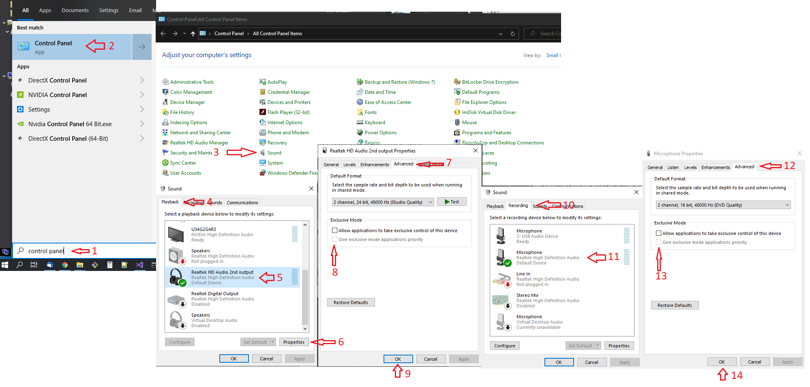

Which is best depends on the quality of your microphone, your voice, the amount of background noise, and countless other factors. It's worth trying both and seeing which gives the best results.
If you want to use the Windows speech recognition engine simply ensure that the 'Prefer Windows speech recogniser' option is checked on the Properties screen. You will get better results if you work through the speech recognition training process in Windows.
If you want to use the default Microsoft voice recognition system, you'll need to install the Microsoft Speech Recognition runtime
From this page click 'Download' and select the right version - for most users this will be x64_SpeechPlatformRuntime\SpeechPlatformRuntime.msi
Once you've installed this, you'll also need to install a language pack
Again, from this page click 'Download' and select the right version - for most users this will be MSSpeech_SR_en-US_TELE.msi (US users) or MSSpeech_SR_en-GB_TELE.msi (UK users).
Note that the app will fall back to using the Windows speech recognition engine if it can't find a working installation of the Microsoft speech recognition engine.
Crew Chief will use the "Default" recording device for voice recognition - this can be selected in the "Recording devices" section of the Window Sounds control panel.
Voice recognition can be configured to be always-on (it listens continuously and responds when it recognises a command) or in response to a button press. To assign a button to a activate voice recognition, press the 'Scan for controllers' button at the bottom of Crew Chief UI. This will populate the 'Available controllers' list. Then select the controller you want to use from this list and select the 'Talk to crew chief' item from the 'Available actions' list. Then click the 'Assign control' button and press the wheel / controller / keyboard button you want to use for this action. By default you have to hold this button down while you talk - this can be changed by selecting a different 'Voice recognition mode'.
Testing voice recognition
Having set it all up press the Start Application button in Crew Chief, then press your voice recognition button and ask "Can you hear me?". If the app can understand you it'll respond with "Yes, I can hear you".Make sure you test this while the game is running as some games claim exclusive control, so if no app is running that is claiming control it will always work.
If it doesn't work: right click on the speaker on the taskbar, select Open Sound Settings then Sound Control Panel. In the Playback tab, select your playback device, then in the Properties / Advanced tab uncheck "Allow applications to take exclusive control of this device" Do the same for your microphone.
Also in the Communications Tab set "When Windows detects communication activity:" Do Nothing
A screen dump of that:

If it's still not working read the words of wisdom in the FAQ.